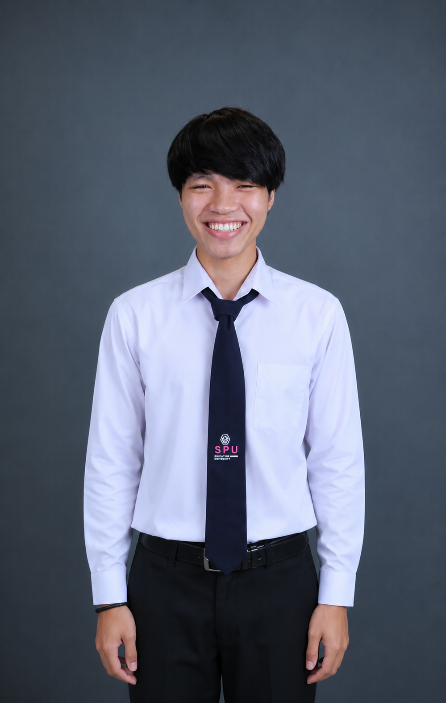

2567 — ปัจจุบัน
ปริญญาตรี มหาวิทยาลัยศรีปทุม
คณะเทคโนโลยีสารสนเทศ — เกรดเฉลี่ยสะสม 3.26

รูปถ่ายมีความมุ่งมั่นในการนำเทคโนโลยีสารสนเทศมาประยุกต์ใช้แก้ปัญหาและพัฒนาระบบงานอย่างมีประสิทธิภาพ ใฝ่เรียนรู้เทคโนโลยีใหม่อยู่เสมอและรับผิดชอบต่อหน้าที่ที่ได้รับมอบหมาย เพื่อพัฒนาทักษะวิชาชีพด้านไอทีและประสบการณ์การทำงานจริง
ผมชื่อปฏิพล อบทม เป็นนักศึกษาชั้นปีที่ 2(เทียบโอน) คณะเทคโนโลยีสารสนเทศ สาขาเทคโนโลยีสารสนเทศและการสื่อสาร มหาวิทยาลัยศรีปทุม สนใจการพัฒนาส่วนหน้าเว็บแอปพลิเคชัน (Frontend Development)
ตลอดระยะเวลาการศึกษา ได้ฝึกฝนทั้งภาคทฤษฎีและปฏิบัติผ่านโครงงานรายวิชาและกิจกรรมของคณะ มีความมุ่งมั่นนำความรู้ไปประยุกต์ใช้เพื่อพัฒนาทักษะการทำงานจริงและเตรียมความพร้อมสู่การเป็นบัณฑิตที่มีคุณภาพ
คณะเทคโนโลยีสารสนเทศ — เกรดเฉลี่ยสะสม 3.26
คอมพิวเตอร์ธุระกิจ — เกรดเฉลี่ย 3.10
ระบบดึงข้อมูลผลการแข่งขันฟุตบอลแบบอัตโนมัติ ตรวจจับการเปลี่ยนแปลงคะแนน และส่งข้อความแจ้งเตือนเข้า Discord แบบเรียลไทม์
ระบบอัตโนมัติสำหรับตรวจจับข้อมูลการจองห้องพักใหม่ และส่งข้อความแจ้งเตือนไปยังผู้เกี่ยวข้องผ่าน LINE แบบทันที ลดขั้นตอนการแจ้งเตือนด้วยมือ
ศึกษาและพัฒนาซอฟต์แวร์หุ่นยนต์อัตโนมัติ (Robotic Process Automation) เพื่อเพิ่มประสิทธิภาพในการ จัดการกระบวนการทำงาน ข้อมูล และลดความผิดพลาดในการทำงานของมนุษย์
ฝึกปฏิบัติงานด้านคอมพิวเตอร์ธุรกิจ สนับสนุนงานด้านเทคโนโลยีสารสนเทศและระบบสารสนเทศภายในหน่วยงาน